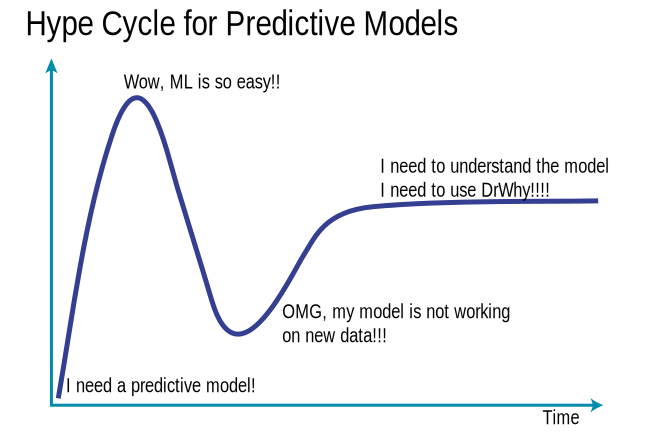

It takes a village to raise a child model.
The way how we do predictive modeling is very ineffective. We spend way too much time on manual time consuming and easy to automate activities like data cleaning and exploration, crisp modeling, model validation. Instead of focusing on model understanding, productisation and communication.
Here we gather tools that can be use to make out work more efficient through the whole model lifecycle. The unified grammar beyond DrWhy.AI universe is described in the Predictive Models: Visual Exploration, Explanation and Debugging book.
Lifecycle for Predictive Models
The DrWhy is based on an unified Model Development Process inspired by RUP. Find an overview in the diagram below.

The DrWhy.AI family
Packages in the DrWhy.AI family of models may be divided into four classes.
Model adapters. Predictive models created with different tools have different structures, and different interfaces. Model adapters create uniform wrappers. This way other packages may operate on models in an unified way.
DALEXis a lightweight package with generic interface.DALEXtrais a package with extensions for heavyweight interfaces likescikitlearn,h2o,mlr.Model agnostic explainers. These packages implement specific methods for model exploration. They can be applied to a single model or they can compare different models.
ingredientsimplements variable specific techniques like Ceteris Paribus, Partial Dependency, Permutation based Feature Importance.iBreakDownimplements techniques for variable attribution, like Break Down or SHAPley values.auditorimplements techniques for model validation, residual diagnostic and performance diagnostic.Model specific explainers. These packages implement model specific techniques.
randomForestExplainerimplements techniques for exploration ofrandomForestmodels.EIXimplements techniques for exploration of gbm and xgboost models.cr19implements techniques for exploration of survival models.Automated exploration. These packages combine series of model exploration techniques and produce an automated report of website for model exploration.
modelStudioimplements a dashboard generator for local and global interactive model exploration.modelDownimplements a HTML website generator for global model cross comparison.

Here is a more detailed overview.
DALEX 


The DALEX package (Descriptive mAchine Learning EXplanations) helps to understand how complex models are working. The main function explain creates a wrapper around a predictive model. Wrapped models may then be explored and compared with a collection of local and global explainers. Recent developments from the area of Interpretable Machine Learning/eXplainable Artificial Intelligence.
DALEX wraps methods from other packages, i.e. ‘pdp’ (Greenwell 2017) doi:10.32614/RJ-2017-016, ‘ALEPlot’ (Apley 2018) <arXiv:1612.08468>, ‘factorMerger’ (Sitko and Biecek 2017) <arXiv:1709.04412>, ‘breakDown’ package (Staniak and Biecek 2018) doi:10.32614/RJ-2018-072, (Fisher at al. 2018) <arXiv:1801.01489>.
Vignettes:
DALEXtra 


The DALEXtra package is an extension pack for DALEX package. This package provides easy to use connectors for models created with scikitlearn, keras, H2O, mljar and mlr.
Vignettes:
ingredients 


The ingredients package is a collection of tools for assessment of feature importance and feature effects.
Key functions: feature_importance() for assessment of global level feature importance, ceteris_paribus() for calculation of the Ceteris Paribus / What-If Profiles, partial_dependency() for Partial Dependency Plots, conditional_dependency() for Conditional Dependency Plots also called M Plots, accumulated_dependency() for Accumulated Local Effects Plots, cluster_profiles() for aggregation of Ceteris Paribus Profiles, generic print() and plot() for better usability of selected explainers, generic plotD3() for interactive D3 based explanations, and generic describe() for explanations in natural language.
Vignettes:
- General introduction: Survival on the RMS Titanic,
- Aspects importance,
- Explanations in natural language
iBreakDown 


The iBreakDown package is a model agnostic tool for explanation of predictions from black boxes ML models. Break Down Table shows contributions of every variable to a final prediction. Break Down Plot presents variable contributions in a concise graphical way. SHAP (Shapley Additive Attributions) values are calculated as average from random Break Down profiles. This package works for binary classifiers as well as regression models.
iBreakDown is a successor of the breakDown package. It is faster (complexity O(p) instead of O(p^2)). It supports interactions and interactive explainers with D3.js plots.
Vignettes:
auditor 


The auditor package is a tool for model-agnostic validation. Implemented techniques facilitate assessing and comparing the goodness of fit and performance of models. In addition, they may be used for the analysis of the similarity of residuals and for the identification of outliers and influential observations. The examination is carried out by diagnostic scores and visual verification. Due to the flexible and consistent grammar, it is simple to validate models of any classes.
Learn more:
- Preprint: auditor: an R Package for Model-Agnostic Visual Validation and Diagnostic,
- List of implemented audits
vivo 


The vivo package helps to calculate instance level variable importance (measure of local sensitivity). The importance measure is based on Ceteris Paribus profiles and can be calculated in eight variants. Select the variant that suits your needs by setting parameters: absolute_deviation, point and density.
Learn more:
randomForestExplainer 


The randomForestExplainer package helps to understand what is happening inside a Random Forest model. This package helps to explore main effects and pairwise interactions, depth distribution, conditional responses and feature importance.
Learn more:
- Vignettes: Boston data: Understanding random forests with randomForestExplainer, Glioblastoma data: Understanding random forests with randomForestExplainer
- Cheatsheet
rSAFE 


The rSAFE package is a model agnostic tool for making an interpretable white-box model more accurate using alternative black-box model called surrogate model. Based on the complicated model, such as neural network or random forest, new features are being extracted and then used in the process of fitting a simpler interpretable model, improving its overall performance.
xspliner 

The xspliner package is a collection of tools for training interpretable surrogate ML models. The package helps to build simple, interpretable models that inherits informations provided by more complicated ones - resulting model may be treated as explanation of provided black box, that was supplied prior to the algorithm. Provided functionality offers graphical and statistical evaluation both for overall model and its components.
shapper 


The shapper is an R wrapper of SHAP python library. It accesses python implementation through reticulate connector.
drifter


The drifter is an R package that identifies concept drift in model structure or in data structure.
Machine learning models are often fitted and validated on historical data under an assumption that data are stationary. The most popular techniques for validation (k-fold cross-validation, repeated cross-validation, and so on) test models on data with the same distribution as training data.
Yet, in many practical applications, deployed models are working in a changing environment. After some time, due to changes in the environment, model performance may degenerate, as model may be less reliable.
Concept drift refers to the change in the data distribution or in the relationships between variables over time. Think about model for energy consumption for a school, over time the school may be equipped with larger number of devices of with more power-efficient devices that may affect the model performance.
EIX


The EIX package implements set of techniques to explore and explain XGBoost and LightGBM models. Main functions of this package cover various variable importance measures and well as functions for identification of interactions between variables.
Learn more:
modelStudio 


The modelStudio package automates the Explanatory Analysis of Machine Learning predictive models. Generate advanced interactive and animated model explanations in the form of a serverless HTML site with only one line of code.
The main modelStudio() function computes various (instance and dataset level) model explanations and produces an interactive, customisable dashboard made with D3.js. It consists of multiple panels for plots with their short descriptions. Easily save and share the dashboard with others. Tools for model exploration unite with tools for EDA (Exploratory Data Analysis) to give a broad overview of the model behavior.
Learn more:
- Getting started
- Vignette: perks and features
- JOSS paper: Interactive Studio with Explanations for ML Predictive Models
modelDown


ThemodelDown package generates a website with HTML summaries for predictive models. Is uses DALEX explainers to compute and plot summaries of how given models behave. We can see how well models behave (Model Performance, Auditor), how much each variable contributes to predictions (Variable Response) and which variables are the most important for a given model (Variable Importance). We can also compare Concept Drift for pairs of models (Drifter). Additionally, data available on the website can be easily recreated in current R session (using archivist package).
Learn more:
- Getting started
- JOSS paper: modelDown: automated website generator with interpretable documentation for predictive machine learning models
EloML 


The EloML package provides Elo rating system for machine learning models. Elo Predictive Power (EPP) score helps to assess model performance based Elo ranking system.
Learn more:
archivist


The archivist package automate serialization and deserialization of R objects. Objects are stored with additional metadata to facilitate reproducibility and governance of data science projects.
Everything that exists in R is an object. archivist is an R package that stores copies of all objects along with their metadata. It helps to manage and recreate objects with final or partial results from data analysis. Use archivist to record every result, to share these results with future you or with others, to search through repository of objects created in the past but needed now.
Learn more:
{kind=link}
Tools that are useful during the model lifetime. stands for our internal tools.
1. Data preparation
- dataMaid; A Suite of Checks for Identification of Potential Errors in a Data Frame as Part of the Data Screening Process
- inspectdf; A collection of utilities for columnwise summary, comparison and visualisation of data frames.
- validate; Professional data validation for the R environment
- errorlocate; Find and replace erroneous fields in data using validation rules
- ggplot2; System for declaratively creating graphics, based on The Grammar of Graphics.
2. Data understanding
- Model Agnostic Variable Importance Scores. Surrogate learning = Train an elastic model and measure feature importance in such model. See DALEX, Model Class Reliance MCR
- vip Variable importance plots
- SAFE Surrogate learning = Train an elastic model and extract feature transformations.
- xspliner Using surrogate black-boxes to train interpretable spline based additive models
- factorMerger Set of tools for factors merging paper
- ingredients Set of tools for model level feature effects and feature importance.
5. Model audit
- auditor model verification, validation, and error analysis vigniette
- DALEX Descriptive mAchine Learning EXplanations
- iml; interpretable machine learning R package
- randomForestExplainer A set of tools to understand what is happening inside a Random Forest
- survxai Explanations for survival models paper
6. Model delivery
- iBreakDown, pyBreakDown Model Agnostic Explainers for Individual Predictions (with interactions)
- ceterisParibus, pyCeterisParibus, ceterisParibusD3 and ingredients Ceteris Paribus Plots (What-If plots) for explanations of a single observation
- localModel and live LIME-like explanations with interpretable features based on Ceteris Paribus curves.
- lime; Local Interpretable Model-Agnostic Explanations (R port of original Python package)
- shapper An R wrapper of SHAP python library
- modelDown modelDown generates a website with HTML summaries for predictive models
- modelStudio modelStudio generates an interactive dashboard with D3 based summaries for predictive models
- drifter Concept Drift and Concept Shift Detection for Predictive Models
- archivist A set of tools for datasets and plots archiving paper
Architecture of DrWhy
DrWhy works on fully trained predictive models. Models can be created with any tool.
DrWhy uses DALEX package to wrap model with additional metadata required for explanations, like validation data, predict function etc.
Explainers for predictive models can be created with model agnostic or model specific functions implemented in various packages.
